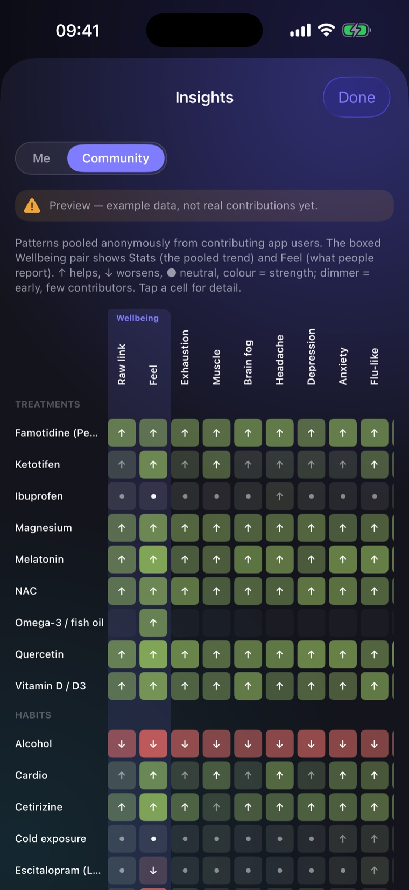

Everything POIS Tracker does, explained.
POIS Tracker helps you track post-orgasmic illness syndrome (POIS) day by day, see what actually helps you — honestly — and learn from an anonymous community. Here’s how every part works.
1Getting started
The first time you open the app, a short setup asks about your symptoms and anything you’ve already noticed helps or hurts. This sets a sensible starting point — you can skip it, and change everything later.
You can turn on a Face ID / passcode lock so only you can open the app. Nothing is shared and no account is needed — everything starts private and on your device.
2Logging your day
Log tabEach day, you log three simple things: your overall wellbeing, any symptoms and how strong they are, and what you did — treatments, supplements, and habits. You also mark the days you had an “O”.
It’s built to take under a minute. A quick daily tap is all it needs.
3Your recovery curve
Me tabOnce you’ve logged a few “O” events, the app draws your typical recovery — how your wellbeing and symptoms dip and bounce back over the days that follow.
It’s shown as a band (your typical range), not a single line, so you can see how consistent your recovery actually is. Tap in to see each symptom on its own — fatigue and brain fog, for example, often recover at different speeds.

4What actually helps you
Me tabThe app looks at everything you log and finds what lines up with your better and worse days. Each factor gets a plain-language read — “seems to help you”, “seems to make things worse”, or “no clear effect yet”.
Honest confidence is the whole point. Every result comes with how sure it is, and when there isn’t enough data it says “not enough data yet” instead of pretending. It also adjusts for your other factors — so it won’t confuse two things you always do together — and it’s deliberately strict about false positives.
Tap any factor to open its detail: your own impression, the measured effect, the confidence level, and how many days it’s based on.

5Running a trial
Me tab · your own experimentsNoticing a pattern is a start; proving it is better. A trial is a small, randomised on/off experiment on a single treatment — the app schedules which days you take it, so you end up comparing yourself to yourself under fair conditions.
At the end you get a verdict on whether it genuinely helped. It’s the strongest evidence you can get on your own, and it’s how you separate a real effect from a lucky week.
6Your factors library
Factors tabA library of treatments, supplements, and lifestyle habits — dozens are built in. Turn on the ones relevant to you, and they become the factors the app analyses.
You can also give any factor a quick “Feel” rating (better / worse) to capture your gut impression. That’s stored separately from the data — your opinion never gets mistaken for measured evidence.
7The community
Community tab · optional & anonymousIf you opt in, the app shares privacy-preserving summaries of what helped you — never your notes, dates, or identity. In return, you see what tends to help across everyone:
- Discoveries — what the community reports helps or hurts, ranked by evidence.
- You vs the community — your own result next to the anonymous pattern for people like you.
- Factor pairs — combinations that seem to work together (or against each other).
- Recovery with vs without — how a factor changes the typical recovery curve across everyone.
- Shared trials — real on/off experiments other people ran, not anecdotes.

8Export for your doctor
POIS is often dismissed because there’s nothing concrete to show. The app turns months of logs into a clean PDF summary you can hand to a healthcare professional — your recovery pattern, what you’ve tried, and what the data suggests, readable in a minute.
9Privacy & your data
Your raw logs never leave your device. The community layer is entirely opt-in, and the only thing that can ever leave is anonymous summary statistics — no notes, no dates, no identity, no account.
You can withdraw from the community, and delete everything, whenever you want. An optional Face ID / passcode lock keeps the app itself private.
10A few honest caveats
- It’s not medical advice. It doesn’t diagnose or treat anything — it helps you see your own patterns and bring real data to a doctor.
- It needs data. The first couple of weeks are about building enough history to see clear patterns. Early on you’ll see “not enough data yet” — that’s the app being honest, not broken.
- Confidence, not certainty. It always tells you how sure a result is, and when it isn’t sure at all.